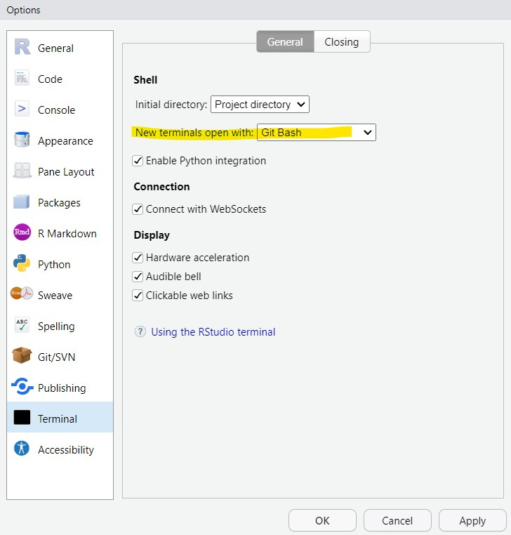

30 Conectar a GitHub con SSH
Puedes conectarte a GitHub utilizando el protocolo Secure Shell (SSH), lo cual proporciona un canal seguro sobre una red insegura.
También puedes asegurar tus claves SSH y configurar un agente de autenticación para no tener que ingresar tu contraseña cada vez que utilices tus claves SSH.
30.1 Paso 1. Generar una llave pública
Deberan contar con:
Una cuenta en GitHub
R y RStudio actualizados
Coloca en la terminal la siguiente información para generar una clave con el mismo correo que usaste para registrar tu cuenta en GitHub.
ssh-keygen -t ed25519 -C "your_email@example.com"NOTA: Si no cuentas con
ssh-keygeninstalado, primero corre este código.sudo apt-get install ssh-keygen
Cuando ejecutes el programa, te va a preguntar si quieres generar una frase, identificar y como quieres nombrar la llave. Si no quieres complicarte presiona 3 veces ENTER, hasta que te parezca una pantalla como al siguiente:

Posteriormente, tendras una carpeta llamada .ssh/, entra en esa carpeta y tendras dos archivos, si no los renombraste tendran el nombre de id_ed25519.
id_ed25519: llave local, no la vamos a usar. Tampoco la compartas.id_ed25519.pub: llave publica. La usaremos para copiarla en los servidores que usaremos.
Vamos a abrir la terminal y vamos a ver el contenido de la carpeta .ssh/:
ls .ssh/30.2 Paso 1. Generar una llave pública exclusiva para Github (opcional)
En caso de que ya cuentes con una clase con ese nombre, puedes crear una nueva llave con otro nombre especifico para Github:
ssh-keygen -t ed25519 -C "your_email@example.com" -f ~/.ssh/id_ed25519_github
30.3 Paso 2. Copiar la clave SSH pública
- Accede a la terminal en tu computadora.
- Copia la clave SSH generada anteriormente usando el siguiente comando:
cat ~/.ssh/id_ed25519.pubEste comando mostrará tu clave pública en la terminal.
- Selecciona y copia toda la clave que aparece en la terminal. Asegúrate de copiar desde ssh-rsa hasta el final de tu correo electrónico.
30.4 Paso 3. Agregar la clave SSH a tu cuenta de GitHub
- Inicia sesión en GitHub en tu navegador.
- Haz clic en tu foto de perfil en la esquina superior derecha y selecciona “Settings” (Configuración).
- En el menú lateral izquierdo, selecciona “SSH and GPG keys”.
- Haz clic en el botón verde “New SSH key”.
- En el campo “Title”, ingresa un nombre descriptivo para tu clave (por ejemplo, “Mi computadora personal”).
- En el campo “Key”, pega la clave SSH que copiaste previamente de la terminal.
- Haz clic en “Add SSH key” para guardar la clave.
30.5 Paso 4. Configurar RStudio para usar Git Bash como terminal
Abre RStudio.
Dirígete a Tools (Herramientas) en la barra superior y selecciona Global Options (Opciones globales).
En el menú de opciones globales, selecciona la pestaña Terminal.
En el campo New terminal open with, selecciona Git Bash.

Haz clic en Apply y luego en OK.
30.6 Paso 5. Abrir la terminal de Git Bash en RStudio
Ahora, para abrir la terminal de Git Bash dentro de RStudio, solo tienes que:
Ir al Tools , hacer clic en Terminal y en abrir New terminal.
Deberías ver que se abre una nueva sesión con Git Bash como la terminal predeterminada.
30.7 Paso 6. Verificar la conexión
Vuelve a la terminal y ejecuta el siguiente comando para verificar que tu clave SSH está correctamente configurada con GitHub:
ssh -T git@github.comEn caso de que se necesite, puedes especificar la llave que usaste:
ssh -i ~/.ssh/id_ed25519 -T git@github.comEl comando ssh -T git@github.com simplemente verifica que tu clave privada se está usando correctamente y que tu clave pública ha sido registrada en GitHub.
Si es la primera vez que te conectas a GitHub con SSH, puede que veas un mensaje que te pregunte si deseas continuar conectándote. Escribe “yes”.
Si todo está bien configurado, deberías ver un mensaje similar a este:
Hi username! You've successfully authenticated, but GitHub does not provide shell access.Esto confirmará que tu clave SSH se ha agregado correctamente a tu cuenta de GitHub y que la conexión es exitosa.
30.7.1 Solución a Error con la llave
A mi paso que la llave esta bien pero no tenia acceso a usar github, mostrando este mensaje:
ssh -i .ssh/id_ed25519_github -T git@github.com
Hi EveliaCoss! You've successfully authenticated, but GitHub does not provide shell access.Agregar configuración
Por lo que decidi configurar el archivo ~/.ssh/config.
nano ~/.ssh/configagrega esto:
Host github.com
HostName github.com
User git
IdentityFile ~/.ssh/id_ed25519_github
IdentitiesOnly yesGuarda y cierra las modificaciones del archivo.
Verifica que los permisos estén correctos
chmod 600 ~/.ssh/id_ed25519_github
chmod 644 ~/.ssh/id_ed25519_github.pub
chmod 600 ~/.ssh/configAgrega tu clave al ssh-agent
Esto asegura que la clave esté disponible durante tus sesiones:
ssh-add ~/.ssh/id_ed25519_githubPrueba conexión otra vez
ssh -T git@github.comDebe decir:
Hi EveliaCoss! You've successfully authenticated, but GitHub does not provide shell access.30.7.2 Solución a Error con la Configuración del Usuario en Git
El comando git config se utiliza para configurar opciones en Git, y los siguientes comandos en particular se usan para establecer tu nombre y correo electrónico globalmente en tu configuración de Git:
git config --global user.email "you@example.com"
git config --global user.name "Your Name"git config --global user.email "you@example.com"
Este comando configura tu dirección de correo electrónico, la cual será utilizada en todos tus commits de Git. El correo electrónico asociado con los commits es importante porque ayuda a identificar quién realizó qué cambios en el repositorio. –global significa que esta configuración se aplicará a todos los repositorios en tu máquina.
git config --global user.name "Your Name"
Este comando establece tu nombre de usuario, que también se asociará con los commits que realices. Al igual que el correo electrónico, se utilizará en todos tus commits en cualquier repositorio de Git en tu máquina.
30.8 Referencias
- Haydee tutorial: Temas Selectos de Análisis Numérico y Computación Científica: Computo científico para el análisis de datos
- Alejandra Medina tutorial: Control de versiones con GitHub y RStudio